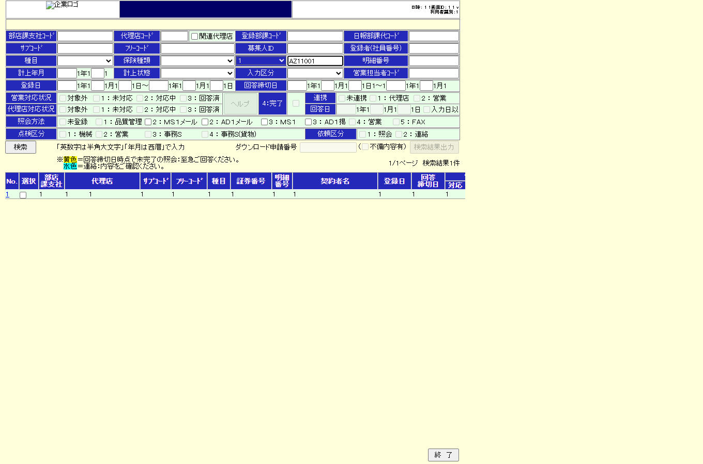

| 1 | BLK-AZ-MENU-SEARCH-LIST | goto start screen | goto | | http://127.0.0.1:10097/AMB/AMA01.html |  |
| 2 | BLK-AZ-MENU-SEARCH-LIST | click 検索 | click | #act001to200 | http://127.0.0.1:10097/AMB/AMA07.html |  |
| 3 | BLK-AZ-MENU-SEARCH-LIST | ast 遷移 不備一覧 | assert | #select | http://127.0.0.1:10097/AMB/AMA07.html |  |
| 4 | BLK-AZ-LIST-FILTER-OPEN-UPDATE | inputBundle 各項目 | fill | #policy_number | http://127.0.0.1:10097/AMB/AMA07.html |  |
| 5 | BLK-AZ-LIST-FILTER-OPEN-UPDATE | click 検索 | click | #select | http://127.0.0.1:10097/AMB/AMA07.html | |
| 6 | BLK-AZ-LIST-FILTER-OPEN-UPDATE | ast 結果表示 | assert | #gyoumu_list tr | http://127.0.0.1:10097/AMB/AMA07.html |  |
| 7 | BLK-AZ-LIST-FILTER-OPEN-UPDATE | click No.リンク | click | #gyoumu_list a[name=link] | http://127.0.0.1:10097/AMB/AMA04.html |  |
| 8 | BLK-AZ-LIST-FILTER-OPEN-UPDATE | ast 遷移 更新画面 | assert | input[name="update"] | http://127.0.0.1:10097/AMB/AMA04.html |  |
| 9 | BLK-AZ-UPDATE-CL | click CL | click | input[name="imperfectClear[0]"] | http://127.0.0.1:10097/AMB/AMA04.html |  |
| 10 | BLK-AZ-UPDATE-CL | click 更新 | click | input[name="update"] | http://127.0.0.1:10097/AMB/AMA04.html |  |
| 11 | BLK-AZ-UPDATE-CL | ast 表示確認 | assert | input[name="update"] | http://127.0.0.1:10097/AMB/AMA04.html |  |
| 12 | BLK-AZ-COMMON-LOGS | ast AP/DBログ・テーブル確認 | assert | input[name='update'] | http://127.0.0.1:10097/AMB/AMA04.html |  |